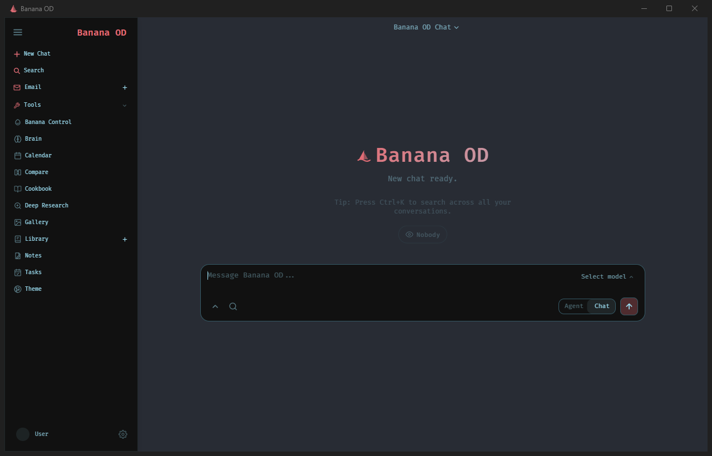

01
Chat + Agenten
Normale Antworten oder mehrstufige Aufgaben mit Werkzeugen und klarer Zuständigkeit.
Banana OD verbindet Chat, Agenten und echte Werkzeuge in einer lokalen Windows-Arbeitsumgebung. Modelle können Projekte verstehen, Dateien bearbeiten und Aufgaben ausführen – mit sichtbaren Grenzen und Freigaben.
Öffentlicher Release in Vorbereitung · ungeprüfte Entwicklungsstände bleiben privat
Banana OD startet als eigenes Windows-Fenster auf dem lokalen Rechner. Wird das Fenster geschlossen, endet auch der zugehörige lokale Server.

Die wichtigsten Bausteine sind bewusst in einer Oberfläche zusammengeführt.
Normale Antworten oder mehrstufige Aufgaben mit Werkzeugen und klarer Zuständigkeit.
Das passende Modell kann nach Aufgabe, Leistung, Datenschutz und Kosten gewählt werden.
Die KI kann nicht nur erklären, sondern innerhalb erlaubter Bereiche praktisch arbeiten.
Banana Control bündelt Projektstatus, Aufgaben, Dienste und Windows-Laufzeiten.
Quellenarbeit, Notizen, Dokumente, Kalender, E-Mail-Entwürfe und weitere Arbeitsbereiche.
Desktop Bridge und Agent Council bleiben begrenzt, protokolliert und bei Risiko freigabepflichtig.
Öffentliche Windows-Releases werden vor der Freigabe als portable App und als Installer geprüft.
Eine starke KI soll komplexe Aufgaben leiten, während kleinere lokale Modelle einfache Arbeiten günstiger und mit getrenntem Kontext übernehmen.
Banana entscheidet nachvollziehbar, welche „Person“ eine Aufgabe übernehmen darf. Unsicherheit, Fehler oder Risiko führen automatisch zur stärkeren Instanz oder zurück zum Nutzer.
Geplant und bereits als sicherer Shadow-Router vorbereitet